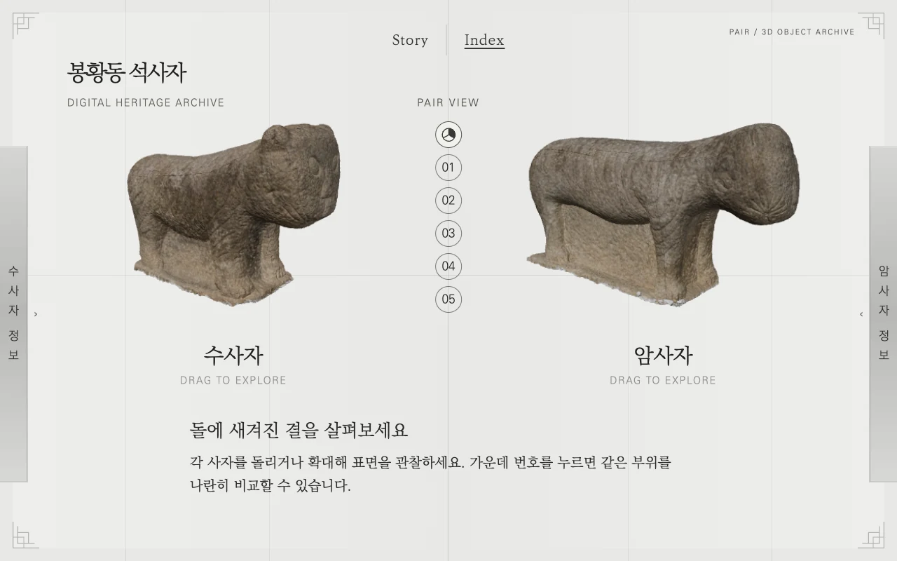
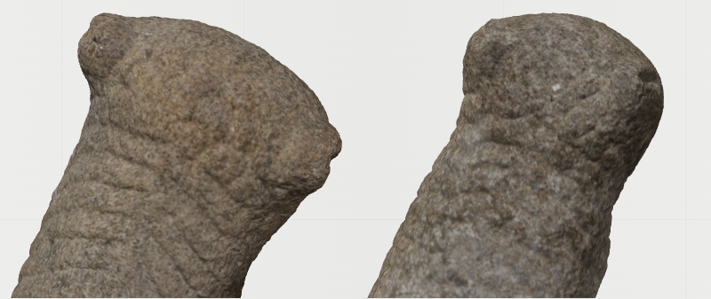
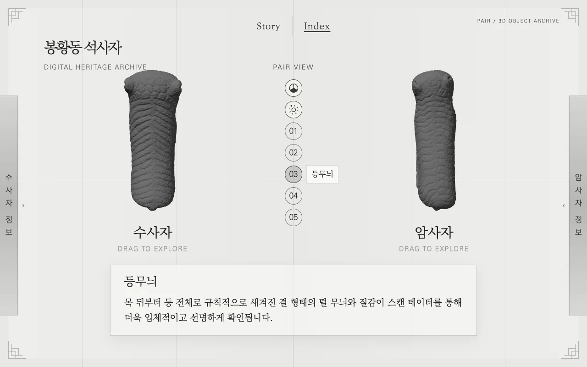
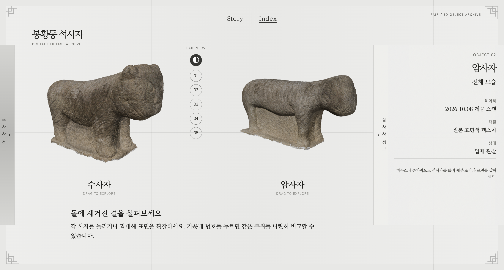

Index · 03
기능 설정
사용 도구 · Figma
-
#01
전체 비교
두 석사자를 나란히 배치하고, 모델을 돌려 전체 형태와 비례를 비교할 수 있게 했습니다.

-
#02

-
#03
표면색 전환
표면색을 끄면 음영만으로 조각선과 굴곡을 살펴볼 수 있습니다.

-
#04
정보창
각 사자의 정보창에서 선택한 부위의 치수와 개수, 자료 출처를 확인할 수 있습니다.
